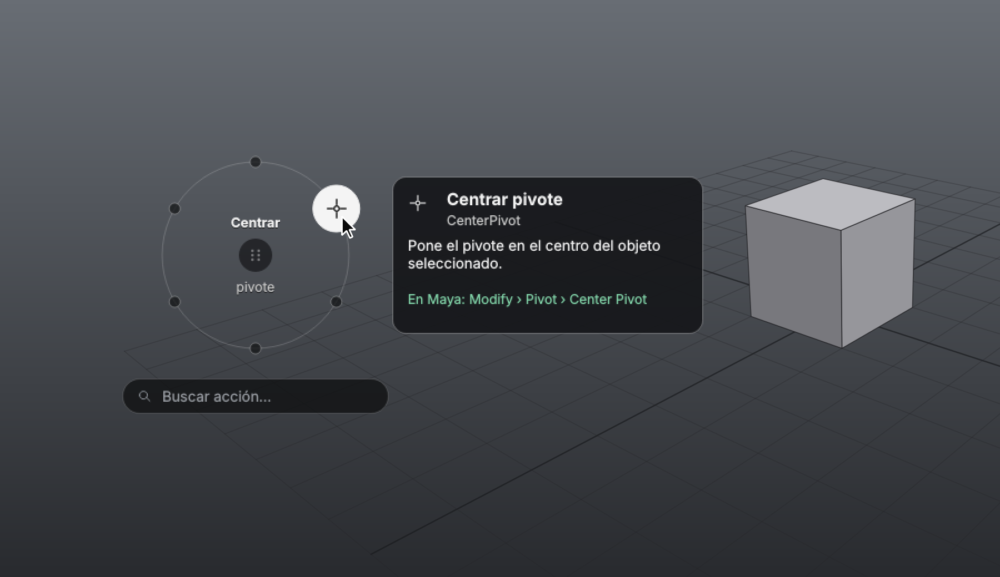
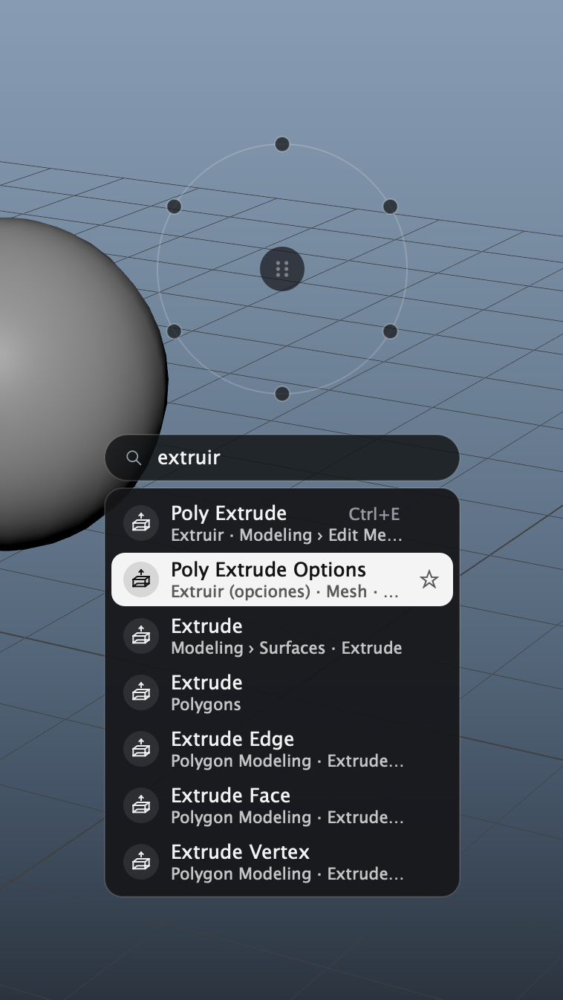
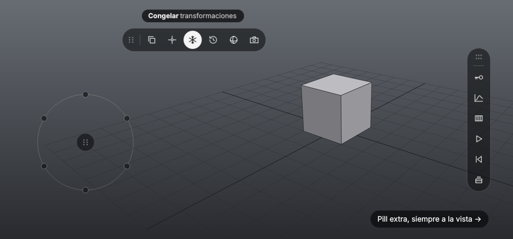
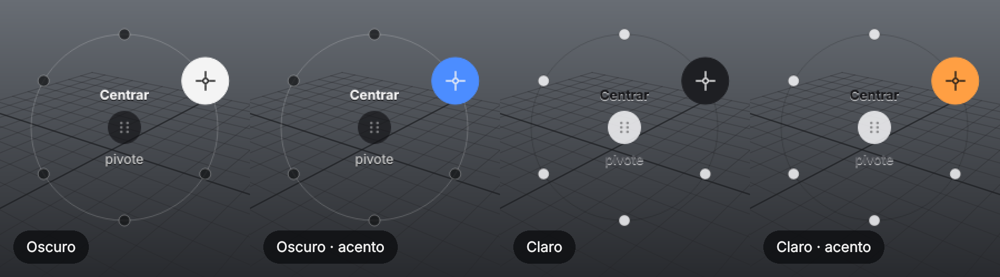
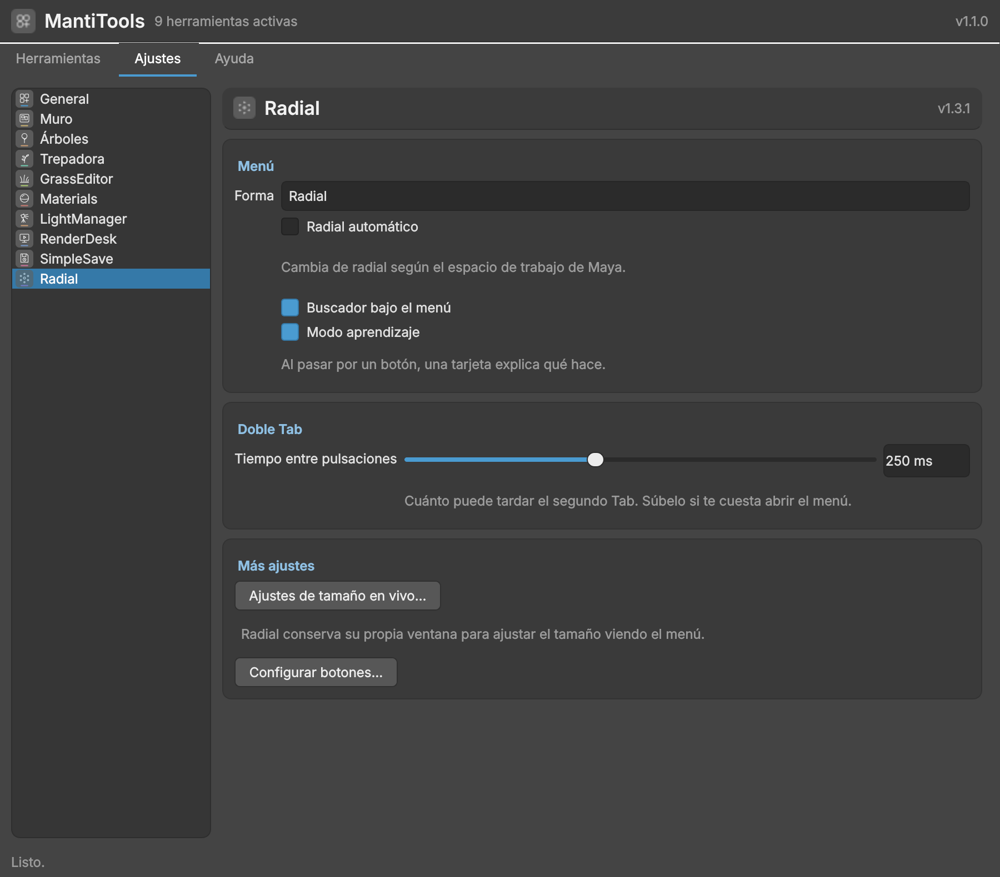

Para qué sirve
Radial es un menú de botones (seis, o los que elijas) que aparece donde tienes el ratón. Sirve para tener a mano las órdenes que más usas sin ir a los menús, y para aprender sus atajos mientras trabajas.
Abrirlo y cerrarlo
Pon el ratón sobre el visor y pulsa Tab dos veces seguidas, rápido. Para cerrarlo, otra vez Tab Tab. También con un clic en el icono Radial del estante.
Gesto rápido: pulsa Tab, Tab y mantén el segundo; mueve el ratón hacia un botón y suelta. Se ejecuta y el menú se cierra.

Usarlo
- Acerca el ratón a un punto: se hace grande y en el centro sale qué hace. Clic para ejecutarlo.
- Para moverlo, arrástralo desde el centro (los seis puntitos).
- Mayús + clic abre la ventana de opciones de esa orden.
- Los botones que encienden o apagan algo (Rayos X, Malla, Imán…) se ven en verde mientras están encendidos.
- Al pasar por un botón, una tarjeta explica qué hace y su atajo. Cuando te los sepas, apaga el modo aprendizaje en Ajustes.

El buscador
Debajo del menú: haz clic, escribe lo que buscas («extrude» o «extruir», «centrar pivote») y elige con las flechas e Intro. Verás el nombre de Maya en inglés y debajo el español. También encuentra las órdenes de los menús de Maya, tus scripts y las de las herramientas de MantiTools. Con la estrella marcas favoritos; si arrastras un resultado hasta un punto del menú, ese botón pasa a hacer esa orden.

Juegos de botones
MantiTools › Radial › Radiales trae varios: Modelado, UV y texturas, Animación y Render con Arnold. Con el radial automático cambia solo cuando pasas de modelar a UV, animación o render. Un archivo .radial se importa desde Radiales › Importar desde archivo.
Cambiar los botones
Clic derecho en el centro del menú (o clic derecho en el icono › Configurar botones):
- Elige el hueco a la izquierda.
- Escribe el texto, elige un icono y, en Acción, busca el comando.
- Probar este botón para ver que funciona y Guardar.
Otras formas de crear botones:
- Crear botón con lo último que hice: convierte tus últimas órdenes de Maya en un botón.
- Arrastra un botón de cualquier estante de Maya hasta un punto del menú.
- Arrastra un botón del menú a otro punto (o a la pill extra) para copiarlo.
Forma, tamaño y aspecto
En Ajustes de la ventana central (o con clic derecho › Ajustes de tamaño en vivo, viendo el menú):
- Forma: anillo o pill (una barra con los botones en fila), y una pill extra siempre a la vista.
- Radio, tamaño de los puntos, opacidad y velocidad del doble Tab.
- Carpetas: un botón que guarda otros seis.
- Tema claro u oscuro, color de acento e iconos de Radial o de Maya.


Practicar atajos
Radial › Modo reto: practicar atajos te pregunta los atajos de las órdenes que más usas.
Si algo va mal
- Si no se abre, pulsa más rápido o sube Tiempo entre pulsaciones en Ajustes.
- Si el menú se te ha ido fuera de la pantalla: clic derecho en el icono › Volver a centrar.
En el estante
| Cómo | Orden |
|---|---|
| Clic en el icono | Mostrar u ocultar |
| Clic derecho | Configurar botones |
| Clic derecho | Ajustes de tamaño en vivo |
| Clic derecho | Volver a centrar |
Ajustes en MantiTools

Menú
| Ajuste | Valores | Qué hace | Clave |
|---|---|---|---|
| Forma | Radial, Pill horizontal, Pill vertical | forma |
|
| Radial automático | Sí / no | Cambia de radial según el espacio de trabajo de Maya. | automatico |
| Buscador bajo el menú | Sí / no | buscador |
|
| Modo aprendizaje | Sí / no | Al pasar por un botón, una tarjeta explica qué hace. | aprendizaje |
Doble Tab
| Ajuste | Valores | Qué hace | Clave |
|---|---|---|---|
| Tiempo entre pulsaciones | 150 a 400 ms | Cuánto puede tardar el segundo Tab. Súbelo si te cuesta abrir el menú. | ventana_ms |
Más ajustes
| Ajuste | Valores | Qué hace | Clave |
|---|---|---|---|
| Ajustes de tamaño en vivo… | Botón | Radial conserva su propia ventana para ajustar el tamaño viendo el menú. | |
| Configurar botones… | Botón |